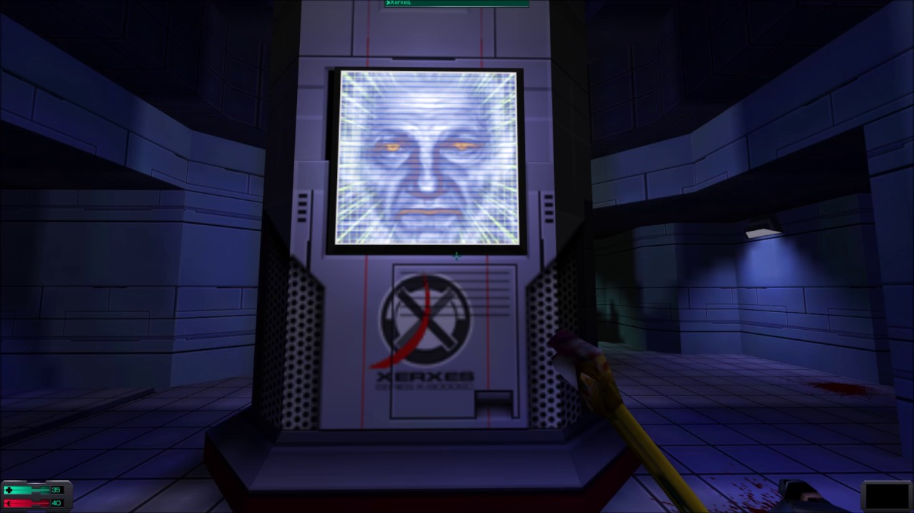

Did you hear that?
Let's talk about the System Shock 2 sounds.
Trioptimum invites you for an adventurous journey. Engines started, ignition! But suddenly deep and hollow voices interfuse with the sounds of engines. Unhuman voices almost melodically speaking to us: "What is a drop of rain compared to the storm? What is a thought compared to the mind? Our unity is full of wonder which your tiny individualism can not even concieve..."

What was that? Was that a voice of something higher, perhaps? Aliens or possibly the creator itself? We were waiting whole millennia for this day to come. A God... Suddenly a hurtling scream resonates down the hall. The cry travels through pipes. "I'M SORRY!" Calls the deep voice while leaning back so he could sweep and strike with his metal pipe.
The Many
The voice of the Many is muffeled but clear at the same time. Blending voices are bringing a dark cloud on the mind. But the content of the speech is gripping. They talk about deep thoughts which aren't to leave your mind so easily. The experience is by itself archetypal and also very frighting.
Shodan
"I am Shodan..." resonates electric words through the spaceship. A voice of the spaceship computer which has lost her mind. Her voice is somewhat peculiar. It's discontinous but at the same time it's unflency is created to fill the player with magnificence of the crazy ruler on Tau Cety 5.
Xerxes
Xerxes is a security system aboard. His voice is in contrast clear and calm. His funcion is largely informative. The player listens and pays attention on the content of Xerxes' words. By the time when the player is sinking to the atmosphere of the game, Xerxes suddenly delivers a sentece without an informative character: "Glory to the flesh, glory to the mass." he says with his cold voice. This sentece is a prove of Xerxes' poisoning by the ideology of the Many.
